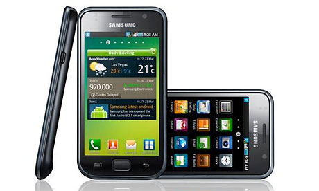
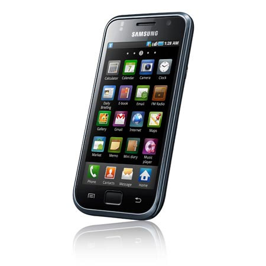
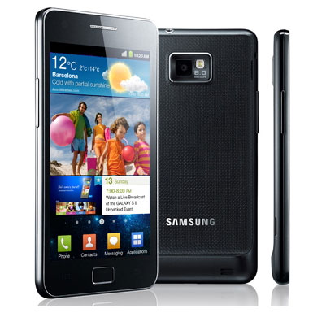
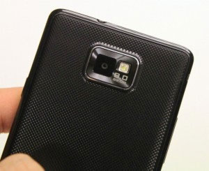

|  |
In early 2010, Samsung announced their new Samsung Galaxy S (with release on June same year) much to the anticipation of the Android crowd. No surprise as the Samsung Galaxy S was the powerhouse of the Galaxy phone series. It packed a 512 MB of RAM and a single core 1GHz processor. At that time the specs were certainly above average considering the size of the phone; 122.4 x 64.2 x 9.9mm (l x w x d) at a weight of 119 g’s. This makes it ever so slightly bigger and heavier than the iPod Touch from Apple. That's not bad, considering that the Samsung Galaxy S is a phone and not just a music player. It also features 8GB or 16GB internal, and a micro SD slot customizable up to 32GB. |
| It utilises the Froyo operating system (Android 2.2), which was the fastest Android at the time. It also features a 4 inch Super AMOLED display; this is the defining point of the Galaxy S. The renowned Super AMOLED coupled with Gorilla Glass display (company known for making virtually indestructible scratch resistant glass) gives the Samsung Galaxy S a display that, while in outdoor sunlight, does not have reflective glare nor does it have a reduced colour qualityin direct sunlight. | |
|  | It has a standard battery of lithium-ion with a rating of 1500mAh (unit used to measure battery life). This usually is around 3 hours of intensive use (e.g. maximum background light etc). The Samsung Galaxy S also has proximity sensors and accelerometer as well as the very convenient Swype-sense input which i myself have tested. i found it much faster than typing on a QWERTY keyboard which is deinitely a plus. Unfortunately it gets a bit messy when you're trying to text on-the-go. |
| The bad things about the Samsung Galaxy S; the plastic chassis of the phone. It is prone to fingerprints. But then again, having the plastic frame makes the phone so much lighter. Another negative feature for the Samsung Galaxy S is the lack of flash for its camera so video or camera snapshots in dim light is a no-go. But then again it also has 720p video recording to make up for it. It also has a crappy loudspeaker so turning it on in a noisy environment is another no-go. But to make up for this, it produces excellent sound quality output through the earpiece. So all in all, despite having some downturns, the absolutely magnificent display coupled with lightweight frame renders the negatives invalid (the phone more than makes up for the bad stuff). |
|
|  | And then came the announcement of the Samsung Galaxy S 2 in February 2011 earlier this year. This is certainly the successor of the Samsung galaxy S. It smashes its predecessor in terms of every aspect. It runs on the Gingerbread OS (Android 2.3; much faster than the 2.2 and a longer battery life than the Samsung Galaxy S). Not only does the newer Android OS reduce strain on the battery but the 1650 mAh rating gives the Samsung Galaxy S 2 an average of an extra hour or so than the Samsung Galaxy S despite having a twice as fast Dual Core 1GHz processor and having double the RAM (2GB). |
| The screen display of the Samsung Galaxy S that defined it has also been upgraded to the Super AMOLED Plus on a bigger 4.3” screen. The Samsung Galaxy S 2 is also a bit bigger BUT it is lighter and slimmer (a technological marvel) standing at 125.3 x 66.1 x 8.49mm at a weight of 116g (compared to Samsung Galaxy S’ 122.4 x 64.2 x 9.9mm at 119g). As such it retains picture quality and clarity in outdoor areas as well as maintaining visual acuity on almost all viewing angles, perfect for showing your mates a video of your crazy antics during the weekends. |
|
|  | The Samsung Galaxy S 2's camera is a huge improvement to the older Galaxy S. Rear camera is 8MP compared to 5mp and a higher resolution front facing camera at 2MP. It also now records videos at an incredible 1080p instead of 720p. It packs the same Gorilla Glass display (i wouldn’t want to have it any other way), multitouch, accelerometer, proximity sensor, Swype touch and micro SD upgrade up to 32GB. However it beats its predecessor in internal storage, now at 16GB or 32GB. |
| And as a final word, the UI on Samsung galaxy S was the TouchWiz UI v3.0 and a TouchWiz UI v4.0 on the S 2. This just means basic improvements on widgets etc, no need to go into too much detail on this. Surfing the internet is almost the same but having a bigger screen and better AMOLED display is certain to improve a better browsing experience on the new Galaxy S 2. It also has a better chassis now, still a bit of a plastic frame but most of the back of is an improvement with the new groove-dotted formay that would reduce, if not prevent, fingerprints on the back (normally having a phone case would solve your fingerprint problem on the Galaxy S as well as making it look nicer). So all in all, the Samsung Galaxy S is certainly an excellent phone by itself but its successor dominates it in every aspect (as you would expect) and until the Samsung Galaxy S 2 is released, the Samsung Galaxy S will be the leading figure in the smartphone market. I hope this comparison was helpful and for further information, please refer to the wonderful article created by a fellow reviewer on this site: http://www.mobile88.com/news/read.asp?file=/2011/3/11/20110310220823&phone=Comparison-Galaxy-S-vs-Samsung-Galaxy-S-II-2 Thanks for reading, see you in the next review !! |
|